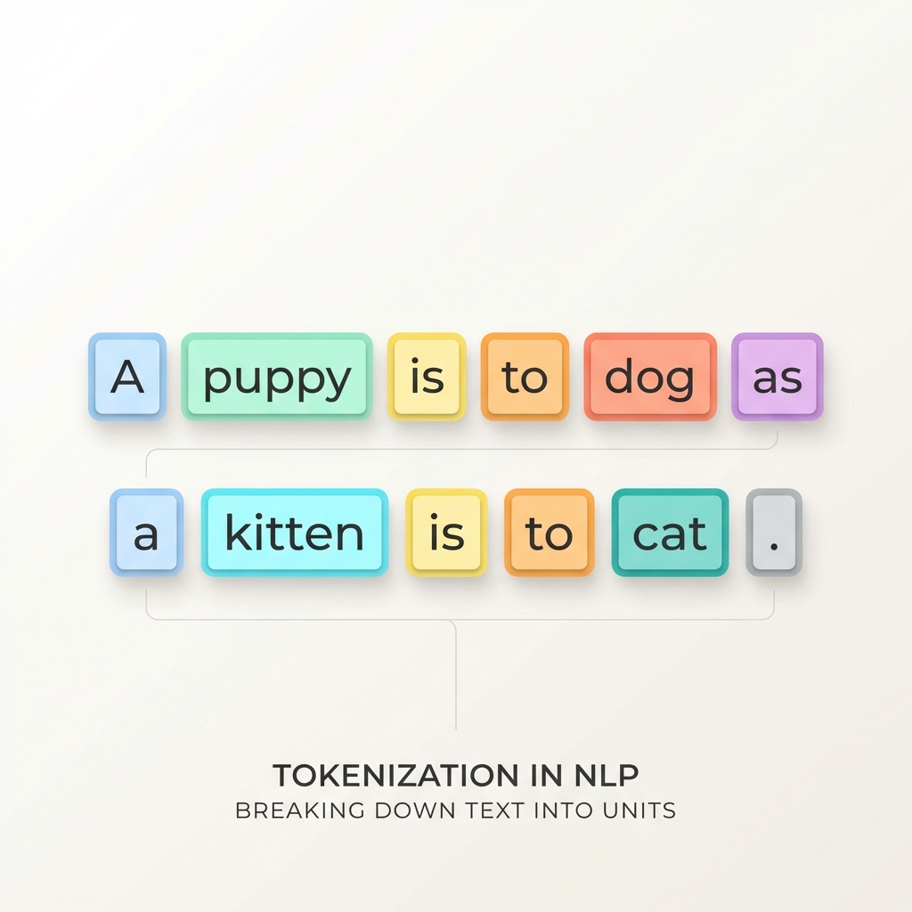

Generative AI
# Generative AI Fundamentals
AWS AI Practitioner Exam (AIF-C01) Study Guide
Generative AI (GenAI) is a subset of deep learning that creates new content (text, images, audio, etc.) by learning patterns from massive datasets. It is considered a subset of deep learning because it adapts models built using deep learning (often without needing retraining or fine-tuning).
It is capable of generating entirely new data, including conversations, stories, images, videos, music, and code.
Key Capabilities of Generative AI
- Adaptability: Models can adapt to various tasks and domains by learning from data and generating content tailored to specific contexts.
- Responsiveness: Real-time generation allows for rapid response times and dynamic interactions (e.g., chatbots).
- Simplicity: Simplifies complex tasks by automating content creation (e.g., reducing human effort in writing).
- Creativity and Exploration: Fosters innovation by generating novel ideas, designs, or solutions through unique combinations.
- Data Efficiency: Some models can learn from small amounts of data and generate new, consistent samples.
- Personalization: Creates content tailored to individual preferences, enhancing engagement.
- Scalability: Once trained, models can produce massive amounts of content quickly across industries.
1. Foundation Models (FMs)
Generative AI is powered by Foundation Models. These are models pretrained on internet-scale, unlabeled data.
- One Model, Many Tasks: Unlike traditional ML which requires a new model for every task, a single FM can be adapted for text generation, summarization, image creation, chatbot interactions, and more.
- Starting Point: FMs serve as the base for building specialized models for specific industries (like medical or legal).
Amazon Bedrock Model Providers
AWS provides access to high-performing foundation models through Amazon Bedrock. Each provider specializes in different tasks:
| Provider | Key Model Series | Primary Tasks | Example Use Case |
|---|---|---|---|
| AI21 Labs | Jurassic-2 | Text generation, Summarization, Paraphrasing, Information extraction. | Finance: Summarizing lengthy financial reports. |
| Amazon | Titan | Text generation, Summarization, Classification, Embeddings, Search/Image generation. | AdTech: Creating studio-quality images for campaigns. |
| Anthropic | Claude | Content generation, Translation, Q&A, Summarization, Code generation/debugging. | Legal: Parsing legal documents and answering specific questions. |
| Stability AI | Stable Diffusion | Generating photo-realistic images, Improving image quality. | Gaming: Creating characters and immersive worlds. |
| Cohere | Command | Text generation, Information extraction, Q&A, Summarization. | Healthcare: Summarizing key ideas from long medical texts. |
| Meta | Llama | Q&A, Chat, Summarization, Sentiment analysis, Text generation. | Customer Service: Powering support chatbots. |
Exam Tip: Balancing Model Size
- Large Models: More precise and capable but expensive and slower (higher latency).
- Small Models: Faster and cheaper (lower latency) but may have lower accuracy for complex tasks.
2. FM Lifecycle
1. Data Selection
Unlabeled data can be used at scale for pre-training because it is much easier to obtain compared to labeled data. Unlabeled data includes raw data, such as images, text files, or videos, with no meaningful informative labels to provide context. FMs require training on massive datasets from diverse sources.
2. Pre-training
Although traditional ML models rely on supervised, unsupervised, or reinforcement learning patterns, FMs are typically pre-trained through self-supervised learning. With self-supervised learning, labeled examples are not required. Self-supervised learning makes use of the structure within the data to autogenerate labels.
During the initial pre-training stage, the FM's algorithm can learn the meaning, context, and relationship of the words in the datasets.
After the initial pre-training, the model can be further pre-trained on additional data. This is known as continuous pre-training.
Exam Perspective: Pre-training vs. Fine-tuning
Pre-training involves training on massive unlabeled datasets and is extremely expensive (millions of dollars). Fine-tuning is done on smaller, labeled datasets to specialize a model and is much cheaper.
3. Optimization
Pre-trained language models can be optimized through techniques like prompt engineering, retrieval-augmented generation (RAG), and fine-tuning on task-specific data. These methods vary in complexity and cost.
4. Evaluation
Whether or not you fine-tune a model or use a pre-trained model off the shelf, the next logical step is to evaluate the model. An FM's performance can be measured using appropriate metrics and benchmarks.
5. Deployment
When the FM meets the desired performance criteria, it can be deployed in the target production environment. Deployment can involve integrating the model into applications, APIs, or other software systems.
6. Feedback and Continuous Improvement
After deployment, the model's performance is continuously monitored. The feedback loop permits continuous enhancement of the foundation model through fine-tuning, continuous pre-training, or re-training, as needed.
3. Core Architectures & Models
Large Language Models (LLMs)
Large language models can be based on a variety of architectures, but the most common architecture in today's state-of-the-art models is the Transformer architecture. Transformer-based LLMs are powerful models that can understand and generate human-like text. They are trained on vast amounts of text data from the internet, books, and other sources, and learn patterns and relationships between words and phrases.
Tokens are the basic units of text that the model processes. Tokens can be words, phrases, or individual characters like a period. Tokens also provide standardization of input data, which makes it easier for the model to process.
- Example: The sentence "A puppy is to dog as a kitten is to cat." might be broken up into:
“A”“puppy”“is”“to”“dog”“as”"a"“kitten”“is”“to”"cat."

Embeddings are numerical representations of tokens, where each token is assigned a vector (a list of numbers) that captures its meaning and relationships with other tokens.
- Contextual Understanding: These vectors are learned during training and allow the model to understand the context and nuances of language.
- Semantic Similarity: Similar concepts cluster together in the vector space.
- Example:
Vector("King") - Vector("Man") + Vector("Woman") ≈ Vector("Queen").
- Example:
- Exam Perspective:
- Vectors are the "language" machines use to calculate meaning.
- Embeddings enable RAG (Retrieval-Augmented Generation) by allowing similarity searches in vector databases (like Amazon OpenSearch or pgvector).
LLMs use these tokens, embeddings, and vectors to understand and generate text. They can capture complex relationships, allowing them to generate coherent text, answer questions, summarize information, and engage in creative writing.
Diffusion Models
Diffusion is a deep learning architecture system that starts with pure noise or random data. The models gradually add more and more meaningful information to this noise until they end up with a clear and coherent output, like an image or a piece of text.
Two-Step Process
- Forward Diffusion: The system gradually introduces a small amount of noise to an input image until only the noise is left over.
- Reverse Diffusion: In the subsequent reverse diffusion step, the noisy image is gradually introduced to denoising until a new image is generated.

Multimodal Models
Instead of relying on a single type of input or output, multimodal models can process and generate multiple modes of data simultaneously. * Synergy: They learn how different modalities like images and text are connected and can influence each other. * Use Cases: Automating video captioning, creating graphics from text instructions, answering questions by combining text and visual info, and translating content while keeping relevant visuals.
Other Generative Models
Generative Adversarial Networks (GANs)
GANs involve two neural networks competing against each other in a zero-sum game:
- Generator: Generates new synthetic data from random noise to resemble training data.
- Discriminator: Tries to distinguish between real data and the synthetic data from the generator.
- Process: The goal is for the generator to eventually produce data indistinguishable from real data.
Variational Autoencoders (VAEs)
VAEs are generative models that use an encoder-decoder architecture to create new data.
- Encoder: Maps input data to a probability distribution in a lower-dimensional latent space (capturing core features like "smile intensity" or "hair color").
- Decoder: Takes a sample from that distribution and generates a reconstruction or a brand-new variation.
- Example: A VAE trained on faces can generate a new, non-existent face by "sampling" different feature combinations from the latent space.
- Exam Tip:
- VAEs are known for speed but can produce blurry images compared to Diffusion models.
- Key takeaway for exam: They use distributions in the latent space to ensure smooth transitions between generated features.
4. Optimizing Model Outputs
The optimization phase of the FM lifecycle is critical for tailoring output to specific needs.
Prompt Engineering
Prompts act as instructions for foundation models. Prompt engineering focuses on developing, designing, and optimizing prompts to enhance output.
Components of a Prompt
- Instructions: Task description (what the FM should do).
- Context: External information to guide the model.
- Input Data: The specific content you want a response for.
- Output Indicator: The desired output type or format.
Exam Tip: Few-Shot vs. Zero-Shot
- Zero-Shot: Asking the model to perform a task without any examples.
- Few-Shot: Providing a few examples within the prompt to guide the model's output.
Example Prompt:
"You are an experienced journalist that excels at condensing long articles into concise summaries. Summarize the following text in 2–3 sentences. Text: [Long article text goes here]"
Fine-Tuning
Fine-tuning involves taking a pre-trained model and adding specific, smaller datasets to modify the weights of the model to better align with the task.
- Instruction Fine-Tuning: Uses examples of how the model should respond to specific instructions (e.g., prompt tuning).
- RLHF (Reinforcement Learning from Human Feedback): Uses human feedback data to align the model with human preferences.
- Use Case: Fine-tuning a base model with articles from medical journals for specialized medical research tasks.
Retrieval-Augmented Generation (RAG)
RAG supplies domain-relevant data as context to produce responses based on that data. * Difference from Fine-Tuning: RAG retrieves relevant documents to provide context but will not change the weights of the foundation model. * Benefit: Allows the model to answer questions based on private or up-to-date data without expensive retraining. * Exam Perspective: RAG is the best choice when you need to reduce hallucinations and use data that changes frequently (e.g., daily news or company wikis).
5. Key Terminology
| Term | Definition |
|---|---|
| Hallucination | When a model generates factually incorrect but plausible-sounding info. |
| Context Window | The limit of how many tokens a model can "remember" or process at once. |
| Temperature | Controls randomness (0 = predictable/factual, 1+ = creative/random). |
Exam Perspective: Hallucinations
Hallucinations are a key risk in GenAI. They are best mitigated using RAG (Grounding the model in facts) or Prompt Engineering (Telling the model to say "I don't know").
| Tokens | Small units of text that provide standardization for model processing. |
Last Updated: Jan 2026